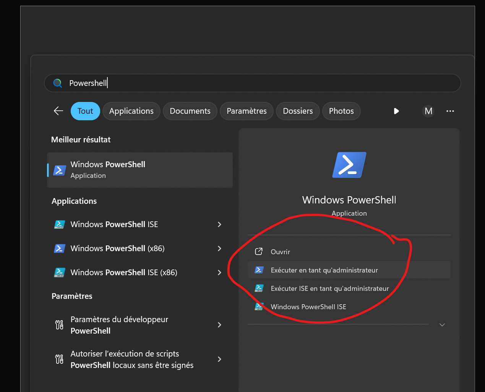
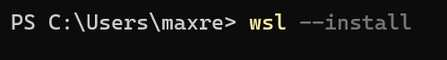
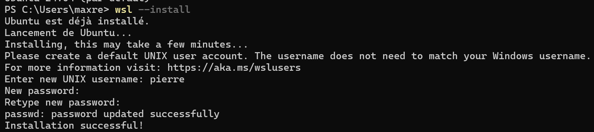

Comment utiliser Linux sur Windows?
Qu'est-ce que c'est WSL ?
Le Sous-Système Linux pour Windows permet d’exécuter une distribution Linux directement sur Windows, ce qui vous permettra d’utiliser des commandes, applications et outils linux sans avoir besoin de faire un dualboot ou installer une machine virtuelle traditionnelle.
Comment installer WSL
Pour installer WSL ouvrez l’application Powershell en mode Administrateur
Sur Powershell tapez la commande qui va installer WSL ainsi qu’une distribution par défaut (Ubuntu) :
wsl --install

Une fois installé, Ubuntu vous demandera de saisir un nom d'utilisateur et un mot de passe pour votre machine.
Ca y est! Tout est prêt!